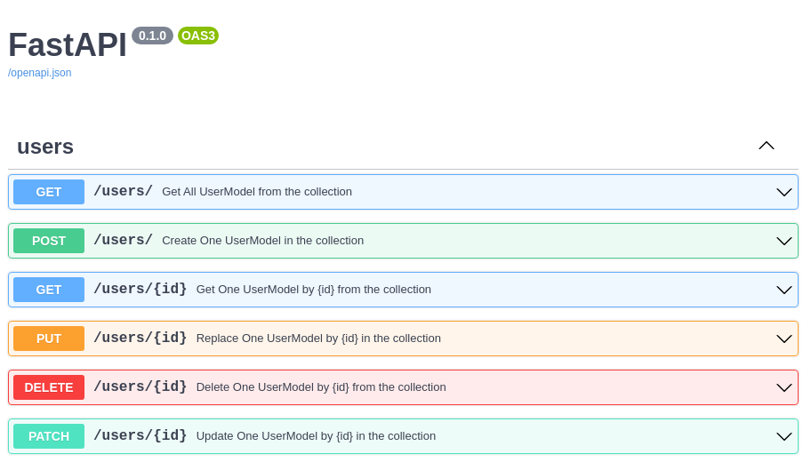

CRUDRouter¶
The CRUDRouter is a powerful utility that automatically generates all the standard REST API routes (Create, Read, Update, Delete) for your MongoDB models. Simply pass your model and database instance, and it will create fully-documented, production-ready endpoints for you.
Quick Start¶
To create a basic router, initialize it with your model and database:
CRUDRouter(
model=MyMongoModel,
db=MyDbInstance,
collection_name="my_collection_name",
prefix="/my_prefix",
)
The router will automatically generate six REST endpoints to manage your data. No boilerplate code required!
Constructor Parameters¶
The current CRUDRouter implementation accepts these primary parameters:
model: MongoDB model used for request validationdb: Motor database instancecollection_name: MongoDB collection nameidentifier_field: field used in item routes, default_idmodel_out: optional response schemalookups: optional list ofCRUDLookupdeclarationsembeds: optional list ofCRUDEmbeddeclarationspopulates: optional list ofCRUDPopulatedeclarationsdisable_get_all,disable_get_one,disable_create_one,disable_replace_one,disable_update_one,disable_delete_one: disable individual generated routesdependencies_get_all,dependencies_get_one,dependencies_create_one,dependencies_replace_one,dependencies_update_one,dependencies_delete_one: attach FastAPI dependencies to specific generated routesfilter_dependency: dependency that returns a server-side filter for theGET /resourceroute
Additional *args and **kwargs are passed through to the underlying router factory.
Output Schemas (Hide Sensitive Data)¶
When you create an API, you might store sensitive information in your database (like passwords) that you don't want to expose in API responses. The CRUDRouter lets you define separate input and output models:
- Input Model: Represents the data stored in your database (including sensitive fields)
- Output Schema: Represents the data sent back to clients (sensitive fields excluded)
Example: Hiding Passwords¶
Here's how to exclude a password field from API responses:
from typing import Annotated
from fastapi_crudrouter_mongodb import (
ObjectId,
MongoObjectId,
MongoModel,
)
# Database Model - includes all fields
class UserModel(MongoModel):
id: Annotated[ObjectId, MongoObjectId] | None = None
name: str
email: str
password: str # Sensitive - will NOT be exposed
# Response Model - only public fields
class UserModelOut(MongoModel):
id: str
name: str
email: str
# Password is intentionally omitted here!
# When clients call your API, they only receive name, email, and id
Now when your API returns user data, the password field is automatically excluded from all responses.
Automatic Route Generation¶
The CRUDRouter automatically creates six standard REST API endpoints for your model:
| Endpoint | HTTP Method | What It Does |
|---|---|---|
/my_prefix |
GET |
Fetch all documents |
/my_prefix |
POST |
Create a new document |
/my_prefix/{id} |
GET |
Fetch a specific document by ID |
/my_prefix/{id} |
PUT |
Replace an entire document |
/my_prefix/{id} |
PATCH |
Update specific fields only |
/my_prefix/{id} |
DELETE |
Remove a document |
REST API Naming Convention
For proper REST conventions, use a plural name for your prefix. For example, use prefix="/users" instead of prefix="/user" so your routes become /users, /users/{id}, etc.
FastAPI Compatibility¶
CRUDRouter forwards extra router options such as prefix and tags, so you can still organize your API like a normal FastAPI router:
router = CRUDRouter(
model=UserModel,
db=db,
collection_name="users",
prefix="/users",
tags=["Users"], # Groups endpoints in API docs
)
For authentication or authorization, the current implementation exposes route-specific dependency parameters such as dependencies_get_all and dependencies_delete_one instead of one shared dependencies parameter.
Advanced Query Features¶
The GET /my_prefix endpoint supports powerful query parameters for retrieving and organizing data:
Pagination Parameters¶
Control how many results you get:
skip- Number of documents to skiplimit- Maximum number of documents to return
Sorting Parameters¶
Order your results:
sort_by- The field name to sort byorder_by- Sort direction:ASCorDESC
Filtering Parameters¶
Filter documents based on conditions:
filters- A JSON object defining MongoDB filter criteria
Complete Example¶
GET /users?skip=0&limit=20&sort_by=name&order_by=DESC&filters={"status":"active"}
This request fetches 20 active users, sorted by name in reverse alphabetical order, skipping the first 0 results.
If order_by is provided with any other value, the router raises a 422 error with:
{
"detail": "order_by must be either ASC or DESC"
}
Filter Validation¶
If the JSON in your filters parameter is invalid, the API will return a 422 error:
{
"detail": "Invalid JSON in filters parameter"
}
Server-Side Filters (Advanced)¶
For filters that should always be applied (like restricting data to the current user), use filter_dependency:
def current_user_filter(user: User = Depends(get_current_user)):
"""Only show documents belonging to the current user"""
return {"user_id": user.id}
router = CRUDRouter(
model=DocumentModel,
db=db,
collection_name="documents",
filter_dependency=current_user_filter,
)
Query vs Server Filters
When filter_dependency is set, client-provided filters query parameters are ignored in favor of the server-side filter. This ensures data security.
Customizing Routes: Disable & Add Dependencies¶
Sometimes you don't need all six CRUD operations, or you want to add authentication/authorization to specific routes. The CRUDRouter lets you customize which routes are available and what dependencies they require.
Disabling Routes¶
Set any of these to True to disable the corresponding endpoint:
| Parameter | Disables |
|---|---|
disable_get_all |
GET all documents |
disable_get_one |
GET a single document |
disable_create_one |
POST to create documents |
disable_replace_one |
PUT to replace documents |
disable_update_one |
PATCH to update documents |
disable_delete_one |
DELETE documents |
Adding Route-Specific Dependencies¶
Add authentication or authorization to individual routes using these parameters:
| Parameter | Protects |
|---|---|
dependencies_get_all |
GET all documents |
dependencies_get_one |
GET single documents |
dependencies_create_one |
POST (create) |
dependencies_replace_one |
PUT (replace) |
dependencies_update_one |
PATCH (update) |
dependencies_delete_one |
DELETE |
Example: Read-Only Collection¶
Create a collection where only reading is allowed:
router = CRUDRouter(
model=ProductModel,
db=db,
collection_name="products",
prefix="/products",
disable_create_one=True, # No POST
disable_replace_one=True, # No PUT
disable_update_one=True, # No PATCH
disable_delete_one=True, # No DELETE
# Only GET endpoints remain
)
Example: Protect Delete Operations¶
Require admin authentication only for deletion:
from fastapi import Depends
async def require_admin(user: User = Depends(get_current_user)):
if not user.is_admin:
raise HTTPException(status_code=403, detail="Admin required")
return user
router = CRUDRouter(
model=UserModel,
db=db,
collection_name="users",
prefix="/users",
dependencies_delete_one=[Depends(require_admin)], # Only DELETE needs admin
)
Example: Protect Read Operations¶
router = CRUDRouter(
model=UserModel,
db=db,
collection_name="users",
prefix="/users",
dependencies_get_all=[Depends(require_auth)],
dependencies_get_one=[Depends(require_auth)],
)
Custom Identifier Fields¶
By default, CRUDRouter uses MongoDB's _id field to uniquely identify documents. However, you can use any unique field as the identifier in your routes.
Default Behavior (Using _id)¶
router = CRUDRouter(
model=UserModel,
db=db,
collection_name="users",
prefix="/users",
)
# Routes: /users/{id}
Custom Identifier (Using Email)¶
router = CRUDRouter(
model=UserModel,
db=db,
collection_name="users",
prefix="/users",
identifier_field="email", # Use email instead of _id
)
# Routes: /users/{email} where {email} is the user's email address
Now API calls become more intuitive:
- GET /users/john@example.com instead of GET /users/507f1f77bcf86cd799439011
Custom Identifiers in API Documentation
The identifier_field parameter also updates your OpenAPI documentation to reflect the actual field name, making your API documentation more accurate and useful.
When identifier_field is left as _id, the generated route path still uses {id} in the URL and OpenAPI docs for readability. When you set a custom identifier such as email, the route path becomes {email}.
Auto-Populate References¶
When working with related data, you often store IDs of related documents rather than embedding entire objects. The populates parameter automatically fetches and includes full related documents in your responses.
What's Populating?¶
Instead of returning just IDs:
{
"id": "123",
"title": "My Song",
"artist_ids": ["456", "789"] // Just IDs
}
Populating returns full documents:
{
"id": "123",
"title": "My Song",
"artist_ids": [
{
"id": "456",
"name": "John Doe",
"genre": "Rock"
},
{
"id": "789",
"name": "Jane Smith",
"genre": "Jazz"
}
]
}
Setup Example¶
from fastapi_crudrouter_mongodb import CRUDRouter, CRUDPopulate
router = CRUDRouter(
model=Track,
db=db,
collection_name="tracks",
prefix="/tracks",
populates=[
CRUDPopulate(
field="artist_ids", # Field containing IDs in this collection
collection="artists", # Collection to fetch documents from
model=Artist, # Model for the fetched documents
),
],
)
Now when clients call:
- GET /tracks - Artist data is auto-populated
- GET /tracks/{id} - Artist data is auto-populated
If you configure populates without setting model_out, the router intentionally skips a strict FastAPI response model for the populated GET responses. This avoids response-model mismatches when populated fields contain full nested documents instead of raw ids.
For more details on populating behavior and edge cases, see the CRUDPopulate documentation.
Automatic API Documentation¶
The CRUDRouter automatically generates comprehensive OpenAPI (Swagger) documentation for all generated routes. You'll get interactive API documentation that shows:
- All available endpoints
- Request and response schemas
- Query parameters with descriptions
- Error responses
- Try-it-out interface to test endpoints directly

Access your interactive API docs at: http://your-app/docs
This means your API documentation is always in sync with your code—no manual updates needed!
Next Steps: Advanced Features¶
The CRUDRouter covers basic CRUD operations, but the library offers more powerful features for complex data relationships:
CRUDLookup¶
Use nested child routes backed by a related collection. This is the feature behind routes such as /users/{id}/messages.
CRUDEmbed¶
Work with embedded documents stored directly inside the parent model.
CRUDPopulate¶
Learn more about automatically fetching related documents. Includes details on handling edge cases and optimizing performance with reference resolution.